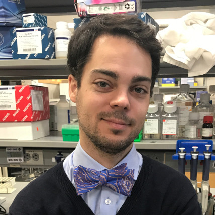

I am a biologist interested in the diversity and evolution of land vertebrates. The dazzling array of different types of mammals, birds, and their allies that we see around us today, evolved from a common ancestor. On the route from that common ancestor to any descendent organism, important changes to their body plans or physiology contributed to a set of adaptations unique to that organism. I aim to figure out the molecular and developmental details of some of these adaptations in different animals.
I use a combination of computational and experimental approaches to investigate these questions (see research). Currently I am a postdoctoral fellow in James Noonan's lab at the Department of Genetics at Yale University.
education and training
2016—present
Postdoctoral researcher, Yale University Department of Genetics, New Haven CT, USA (advisor:
James Noonan)
2011—2015
PhD in Evolutionary Genetics, Uppsala University Department of Evolutionary Biology, Sweden (advisor:
Hans Ellegren)
2009—2011
MSc in Evolutionary Biology, Uppsala University, Sweden
2010
Research Intern, Max Planck Institute for Evolutionary Biology, Plön, Germany (advisors: Angelika Börsch-Haubold and
Diethard Tautz)
2005—2009
BSc in Biology, University of Heidelberg, Germany
2008
Research Assistant, Institute of Zoology, University of Heidelberg
2007—2008
Research Assistant, Institute for Pharmacy and Molecular Biotechnology, University of Heidelberg
2007
Research Intern, Institute for Pharmacy and Molecular Biotechnology, University of Heidelberg
2005
Research Intern, Max Planck Institute for Molecular Plant Physiology, Potsdam, Germany
2004
Research Intern, Institute for Developmental and Molecular Biology of Plants, University of Düsseldorf, Germany
conferences
2017
ASBMB special symposium Evolution and Core Processes in Gene Expression, Stowers Institute for Medical Research, Kansas City MO, USA (poster)
2014
Society for Molecular Biology and Evolution Meeting, San Juan, Puerto Rico (talk)
2012
European Meeting for PhD Students in Evolutionary Biology, Virrat, Finland (talk)
Society for Molecular Biology and Evolution Meeting, Dublin, Ireland (poster)
2011
European Meeting for PhD Students in Evolutionary Biology, Seia, Portugal (talk)
memberships and services
2014—present
Member, Society for Molecular Biology and Evolution
2011—present
Referee for Biology Letters, Evolution Letters, Genome Biology and Evolution, Molecular Biology and Evolution, Molecular Ecology, Nucleic Acids Research, PLoS ONE, and Proceedings of the Royal Society B

Dr. Severin Uebbing
Yale University Department of Genetics
333 Cedar Street, SHM I 120
New Haven, CT 06520, USA
severin.uebbing/at/yale.edu
+1 (203) 737-1946
twitter: @severinEvo